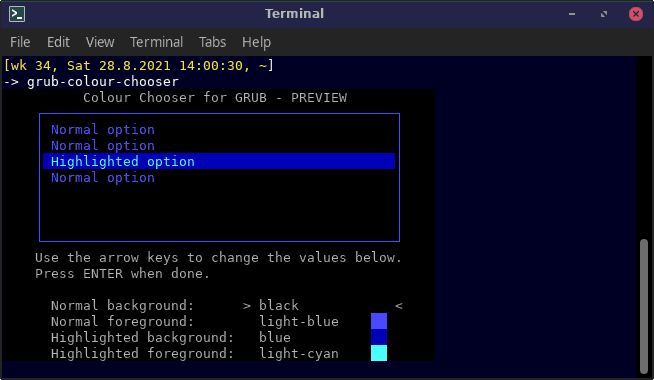

This utility can choose grub menu colours by using the arrow keys to select from a preview. Changes can be saved in /etc/default/grub. After reboot you will see the changes in the grub menu.
/etc/default/grub

Usage: grub-colour-chooser